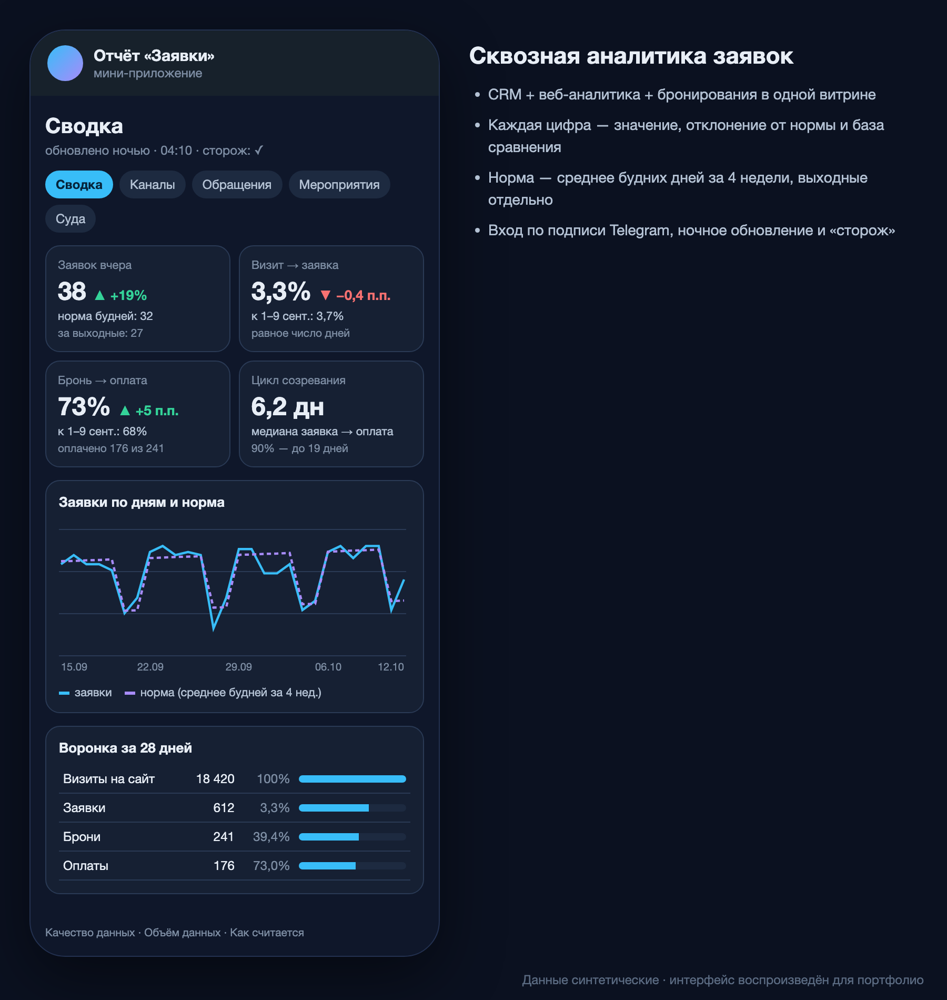
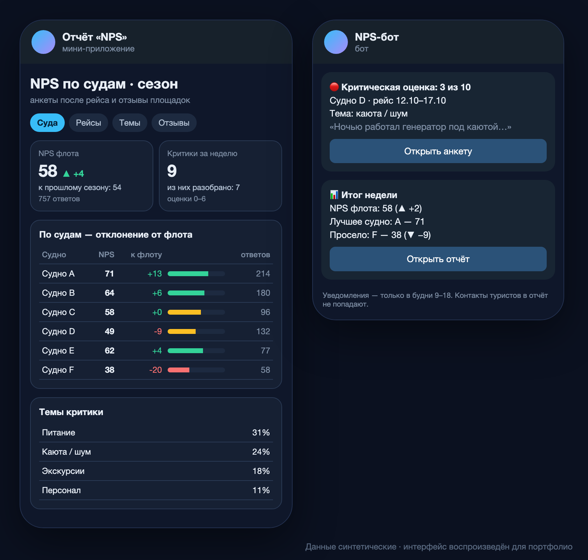
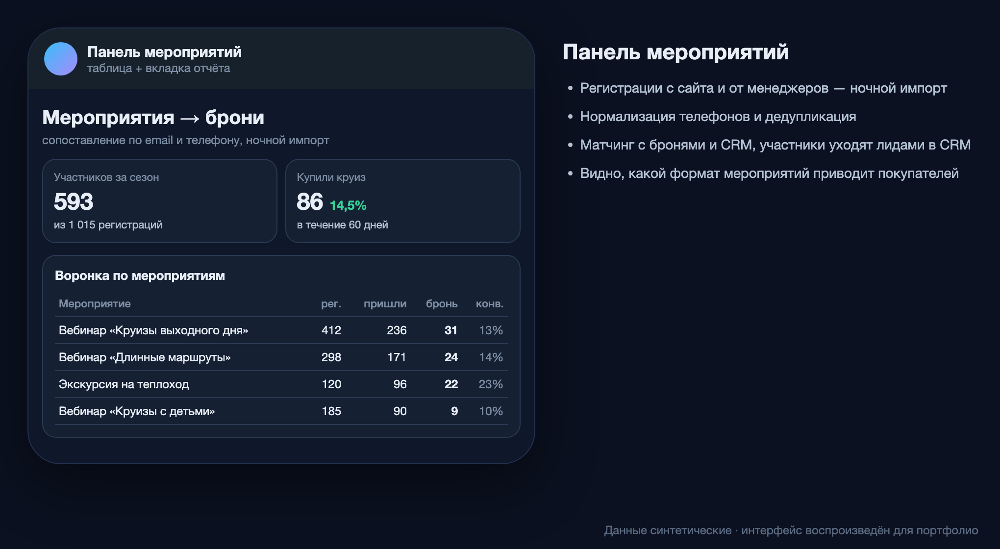
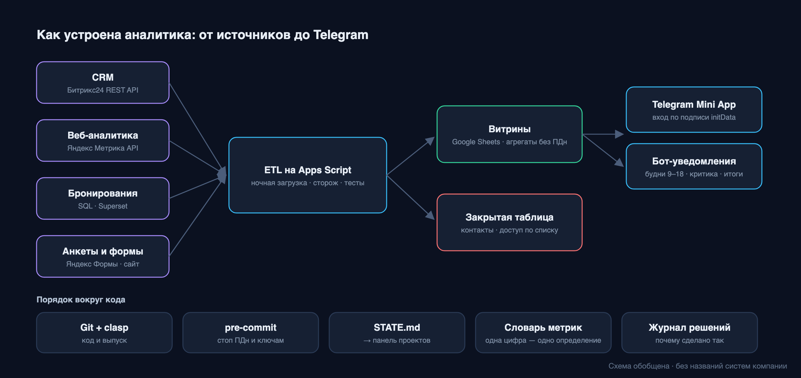

Кейсы
Рабочие проекты описаны обезличенно: без названий компаний, имён и клиентских данных.
Рабочие кейсы

Сквозная аналитика заявок в Telegram Mini App CRM + Метрика + бронирования → отчёт в Telegram Mini App- Google Apps Script
- Bitrix24 REST API
- Яндекс Метрика API
- REST API

NPS и отзывы туристов NPS по судну и рейсу, алерты о критике, работа с ПДн- Google Apps Script
- Google Sheets
- Яндекс Формы
- SQL
- SQL
- Superset
- Google Apps Script
- Node.js

Панель вебинаров и офлайн-мероприятий Матчинг участников с бронями, места по сеансам- Google Apps Script
- Google Sheets
- Bitrix24 REST API
- Tilda
- Mindbox
- DashaMail
- Google Apps Script
- Bitrix24

«Штаб аналитики»: порядок в данных и процессах Git, словарь метрик, защита от утечки ПДн- Git
- GitHub Projects
- Python
- clasp
- Google Apps Script
- Яндекс Метрика API
- SQL
- Superset
Пет-проекты
Торговый бот для TON
Риск-менеджмент, симуляция, журнал сделок
 Курс криптовалют в строке меню Mac
SwiftBar, сверка с кошельком, фолбэки API
Курс криптовалют в строке меню Mac
SwiftBar, сверка с кошельком, фолбэки API
- TypeScript
- Node.js
- SQLite
- Telegram Bot API
- Windows
- PowerShell
- OpenSSH
- Tailscale
- rclone
- crypt
- WinFsp
- WebDAV
- Swift
- SwiftUI
- AppKit
- watchOS
- Swift
- SwiftUI
- Core Bluetooth
- WatchConnectivity
- Python
- Bash
- AppleScript
- SwiftBar